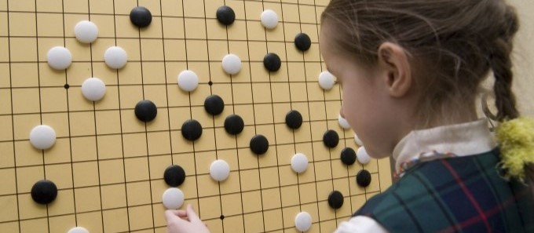
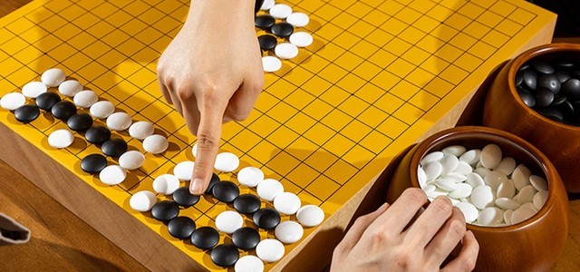
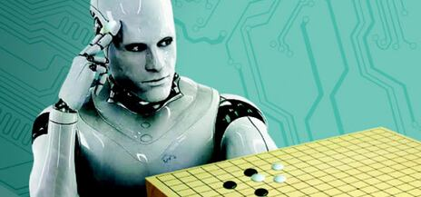

특징 1: 매우 간단한 룰, 높은 자유도룰 자체는 오목보다 살짝 어려울 정도로 간결하다. 어린 아이라도 배울 의지가 있으면 이삼일 만에 배울 수 있다.
사용하는 기물도 바둑판과 흰색과 검은색의 바둑돌이 전부다. |
 |
|  | 특징 2: 진입장벽과 난이도높은 자유도로 인해 룰만 알고 바둑에 대한 기초 공부가 제대로 되어 있지 않으면 물리적으로 대국은 할 수는 있지만,
유의미한 대국을 하기 위해서는 우선 돌을 잡는 여러 방법을 이해해야 하고 살릴 수 있는 돌과 살릴 수 없는 돌을 구분할 줄 알아야 한다. |
특징 3: 두뇌 게임 알파고의 등장 이후 바둑은 응용수학의 한 갈래라는 점이 확실히 증명된 상태다.
최선의 수순을 찾는 것은 본질적으로 경로 찾기 문제와 동일하고, 형세 판단이란 곧 승률 계산, 확률 계산이다.
이외에도 바둑의 여러 부분들을 종합해본다면, 바둑 자체가 이산수학을 게임화한 것이다. |  |